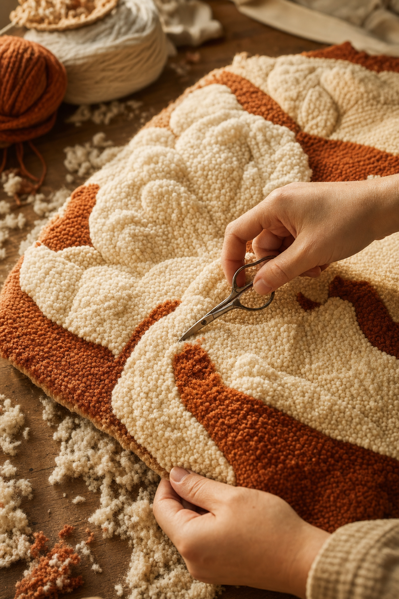

Module 05 · Sculpted & Carved Pile
Once uniform loops are dependable, the next horizon is varied pile — different heights across a single piece — and carving those heights into dimensional relief. This is where a rug stops being a decorated surface and becomes a small textile sculpture.

Lesson 5.1 — Varied pile with an adjustable needle
An adjustable punch needle (Lavor, Ukrainian-style, and similar) has a collar or numbered dial that changes how far the needle protrudes past the handle. Because loops are always the length of the exposed shaft (from the fabric to where the handle stops), changing that setting changes pile height.
Typical settings on a Lavor 5.5mm:
| Setting | Approx pile height | Use |
|---|---|---|
| A / 1 (deepest) | ~2.5 cm | Shaggy longest pile — good for fringes, faux-fur effects |
| B / 2 | ~1.8 cm | High plush pile, comfortable for wall pieces |
| C / 3 | ~1.2 cm | Medium pile — the default for most work |
| D / 4 (shallowest) | ~0.8 cm | Low pile — for detailed shapes or areas that will be carved short |
Punch the tallest pile areas first, then decrease the setting as you work into shorter areas. If you go the other way — short first — the taller loops on the next section will collapse and hide adjacent short work. Think of pile like landscape: tallest features go in first.
Punching order for a piece with three pile heights
Punch all the tallest areas first
Set your needle to the deepest setting. Punch those regions completely, including outlines. Change color as needed but do not change depth.Reset to the medium setting
Punch the medium-height regions. Border them tightly against the already-punched tall areas.Reset to the shortest setting
Punch the low areas last. These are the regions you may later carve.Verify from the loop side
Flip the frame periodically. The height difference should be visible even before any carving.
Lesson 5.2 — Shearing loops with appliqué scissors
Shearing — cutting the tops of loops off — turns loop pile into cut pile. Cut pile has a velvety, plush surface (like a shag rug) and hides the individual loops. It's also the foundation for carving.
Why appliqué scissors, not regular ones
Appliqué scissors have one duckbill-shaped blade. The flat side sits against the fabric and pushes unwanted material away while the top blade cuts. This is exactly what you want when cutting loops: the flat blade keeps you from accidentally slicing into the backing fabric, and the geometry lets you shear close and clean.
Technique
Work on the loop side (finished front)
Take the piece off the frame or flip it so you're looking at the loops.Hold the piece flat with your non-dominant hand under the area to be sheared
Support the fabric so the loops stand up straight.Shear in a circular motion using the middle of the blade — not the tips
Move the scissors in small arcs. Never use the tips; they poke through the loops and cut inconsistently.Use the flat back edge to scrape up longer strays
After a pass, the "moon-shaped" back of the appliqué scissors can lift straggler yarns for a second cut.Continue until the surface reads as velvet, not loops
The cut fibers may need a light brushing to fluff up.
If you accidentally cut through the monks cloth, the loops in that area lose their anchor and pull out immediately. Work slowly, and always keep the flat blade against the fabric surface — that flat blade is the reason appliqué scissors exist.
Lesson 5.3 — Carving relief
Carving is the third step, done after some regions have been sheared. You cut certain areas of cut pile shorter than others, creating visible height differences that read as shadow and depth. This is the technique that produces the sculpted, almost bas-relief look of contemporary punch needle art.
Planning what to carve
Not everything should be carved. The carved regions define shape and shadow — usually:
- Edges between color regions — carve a narrow trench along the edge of one color where it meets another, and the edge pops visually.
- Areas meant to sit "behind" — carve them shorter so the untouched pile reads as forward.
- Details you want to define — a nose, a stem, a fold. Carve them shorter and they sharpen.
Technique
Start with a light pass
Take off the top third of the loops in the region you want lower. Check the effect. It's easier to carve more than to add yarn back.Work in small sections
Carve a 1"×1" region, step back, look. Adjust before committing to the next section.Use the tip only for definition, never for bulk removal
The middle of the blade removes bulk. The tips are for defining sharp lines where two regions meet.Vacuum or shake often
Cut wool creates a lot of fluff that visually obscures what you've done. Clear it between passes.
Steaming after carving
Carved pile can look scraggly right after cutting. A light steam (a wet cloth pressed with a hot iron above the piece, not touching) makes the cut fibers relax and blend, and the finished surface reads much more clearly. Steam-block the piece flat as part of finishing (see Module 06).
Cut pile is unforgiving in one direction only: you cannot add yarn back. Take small passes, check, take another pass. The best carved rugs are the ones where the maker knew when to stop.